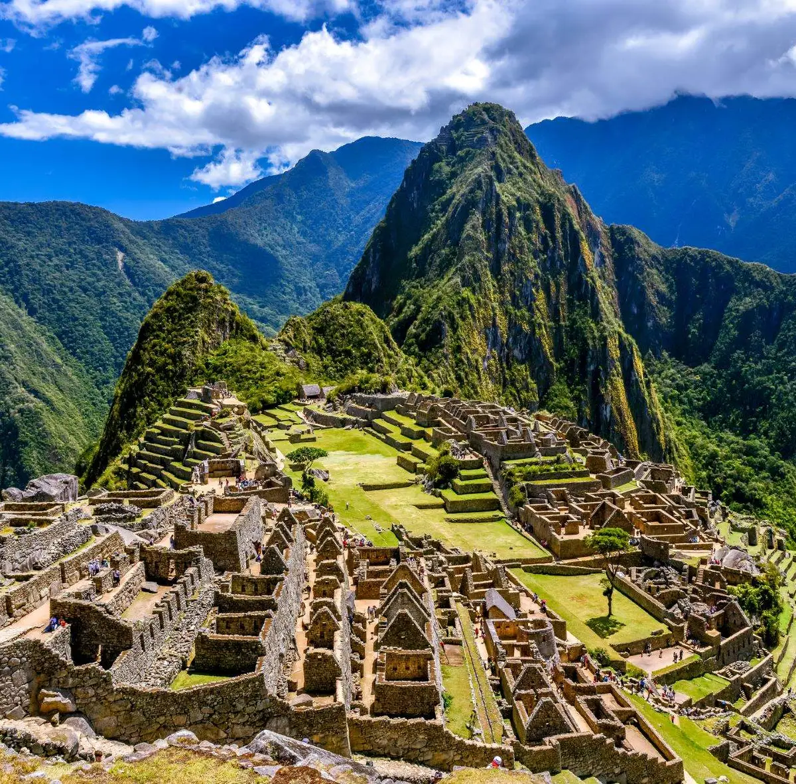
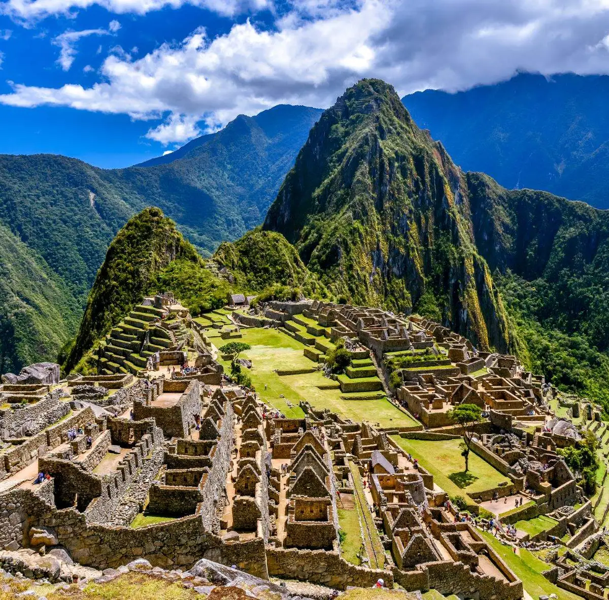

🌍 Rota das 7 Maravilhas do Mundo Moderno
Você já teve aquela vontade de pegar sua mochila e sair rodando mundo afora? A Traveling Around transforma esse sonho em realidade. Nossos pacotes são desenhados para uma imersão total nas culturas das 7 Maravilhas, garantindo guias multilíngues e rotas otimizadas.
Explore Antes de Partir

 

Por que escolher a Traveling Around?
Na TRAVELING AROUND, garantimos que você se sinta em casa em qualquer lugar do mundo. Nossos mapas de paradas abrangentes cobrem desde os pontos turísticos mais famosos até joias escondidas, assegurando que cada aventura seja inesquecível e sem preocupações.
Gastronomia ao Redor do Mundo
Nossas rotas incluem degustações e workshops culinários. Prepare seu paladar!
Pato de Pequim (China)
O prato mais emblemático da região da Grande Muralha, conhecido por sua pele crocante. Servido em panquecas com molho hoisin. Sabores ricos e uso de trigo.
Lomo Saltado (Peru)
Na serra andina de Machu Picchu, o Lomo Saltado (carne salteada) é um destaque. Uso intenso de milho, batata e pimenta ají.
Cochinita Pibil (México)
Prato maia famoso na região de Chichén Itzá: carne de porco marinada em achiote e cozida lentamente, servida em tacos. Uso de coentro e pimenta habanero.
Massa Carbonara (Itália)
Perto do Coliseu, o Carbonara reina: massa com ovos, guanciale e queijo pecorino. Foco em massas artesanais e azeite de oliva.
💰 Planos e Pacotes
Pacote Bronze: A Rota Clássica
Visita a 4 Maravilhas (Coliseu, Cristo Redentor, Chichén Itzá e Taj Mahal). Guias em Inglês/Espanhol. Acomodação padrão. Duração: 15 dias.
Ver PreçosPacote Prata: Expedição Balanceada
Visita a 6 Maravilhas (inclui as do Bronze, mais Machu Picchu e Muralha da China). Guias bilíngues e acomodação superior. Flexibilidade moderada. Duração: 22 dias.
Saiba MaisPacote Ouro: Exploração Total
Visita a todas as 7 Maravilhas! Guias multilíngues fluentes. Acomodação premium e roteiro personalizável. 30 dias de imersão cultural completa. Duração: 30 dias.
Reservar Agora📞 Contato
Pronto para a sua aventura? Entre em contato conosco e comece a planejar sua jornada.